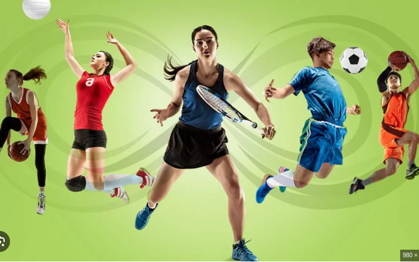

Meus projetos
Meu filme preferido é as crônicas de narnia
Um filme que nos transporta para outro mundo.

Praticando esportes
A prática esportiva envolve o uso de diversos grupos musculares, promovendo o fortalecimento muscular e a manutenção da densidade óssea. Isso é especialmente importante para prevenir a osteoporose e melhorar a resistência física.
falta menos de um mês
Falta menos de um mês para acabar o segundo ano, menos de um mês para estar no terceiro ano, meu ultimo ano na escola e eu nao sei oque quero ainda.